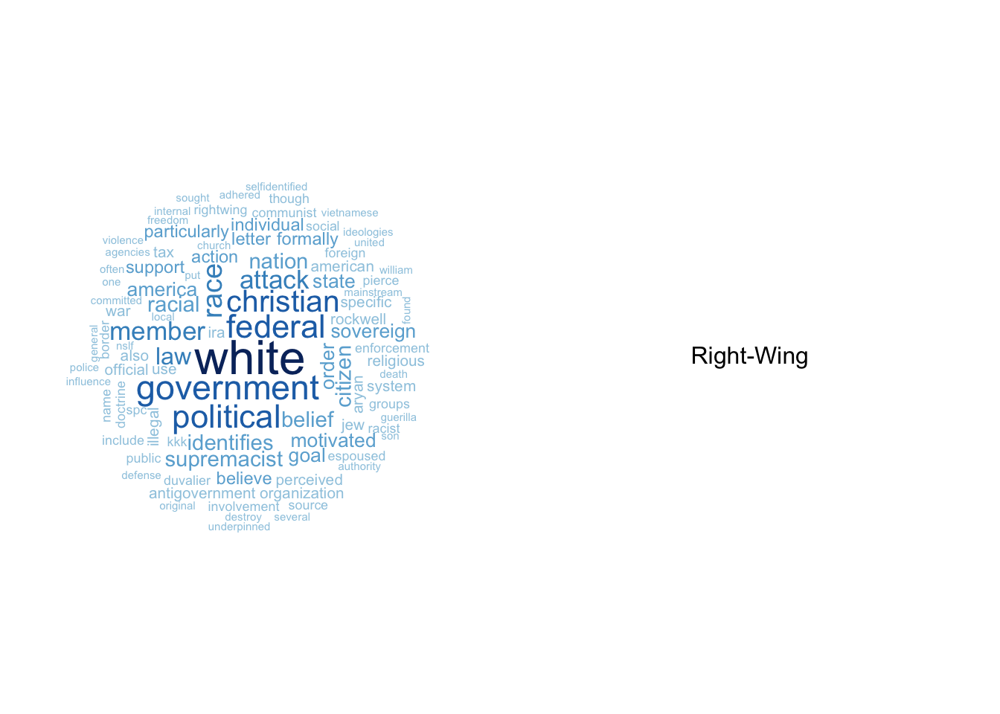
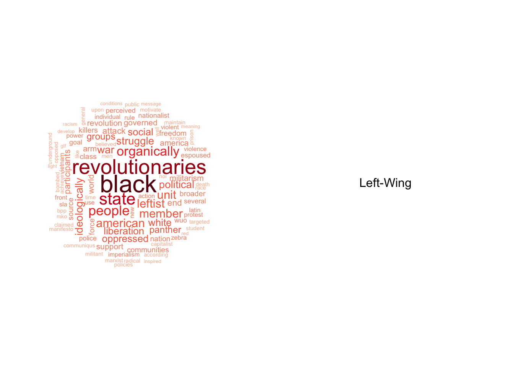
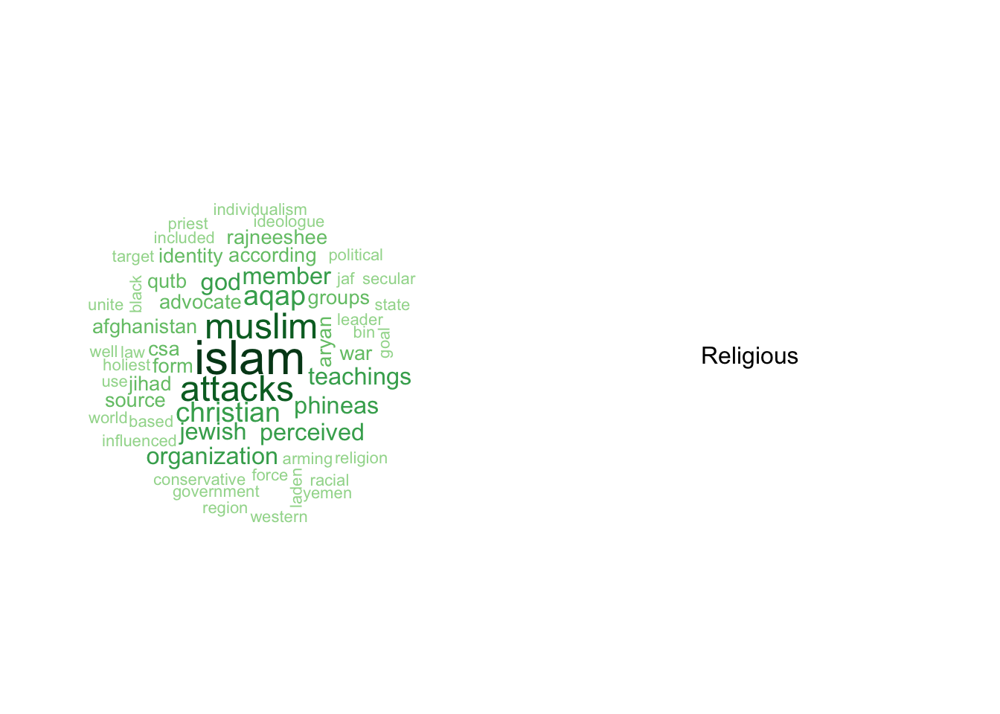
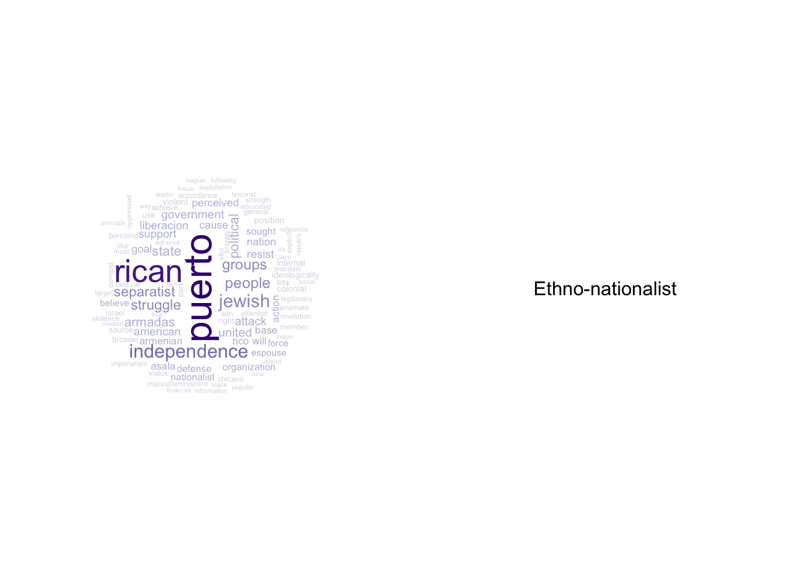
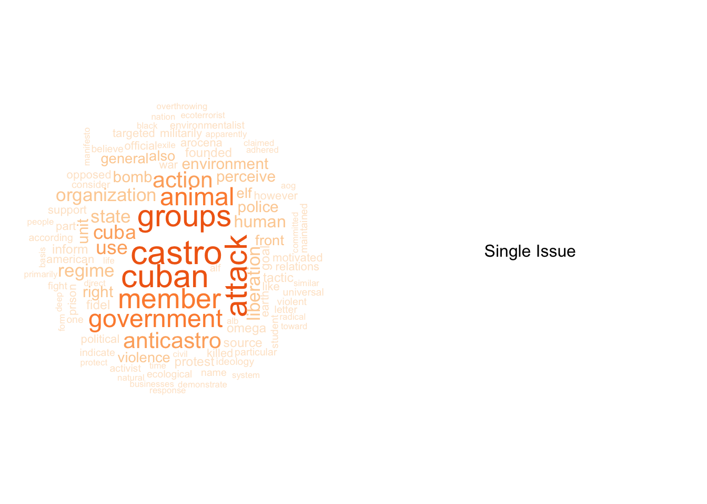

The founding philosophy describes the group’s mission, raison d’etre and epistemological concerns. To investigate the similarities and differences in missions across the ideologies, the word clouds above show the most frequent terms used in describing the founding philosophies of different idologies, colour coded by ideology type.
Comparing the terms used in the founding philosophy across the 5 dominant ideologies, there appears to be a common theme of race driving the 5 ideologies, while each taking a different stance, suggestive of groups under these ideologies sparked by racial discontent. Examining the top race-affiliated words for each ideology, there is an apparent difference in racial stance for the first 4 ideologies, with Right-Wing groups focusing on “white”, Left-Wing groups focusing on “black”, Religious groups on “muslim” and Ethno-nationalist on “jewish’.
In addition, there appears to be a common theme of religion with the Right-Wing and Religious groups, with common top words like “christian”, albeit the latter ideology having missions mostly related to “islam”.
Moreover, the Left-Wing and Ethno-nationalist appear to have similar philosophies driven by missions for freedom with words like “struggle”, “oppressed” and “independence”, while the Right-Wing has more “political” and “federal” concerns.
Lastly, the Single Issue groups appear to be driven by a wide spectrum of concerns, with similar concerns with the other ideologies like “government” and “liberation”, but also entirely different issues such as “animal”, “cuban” and “environment”.